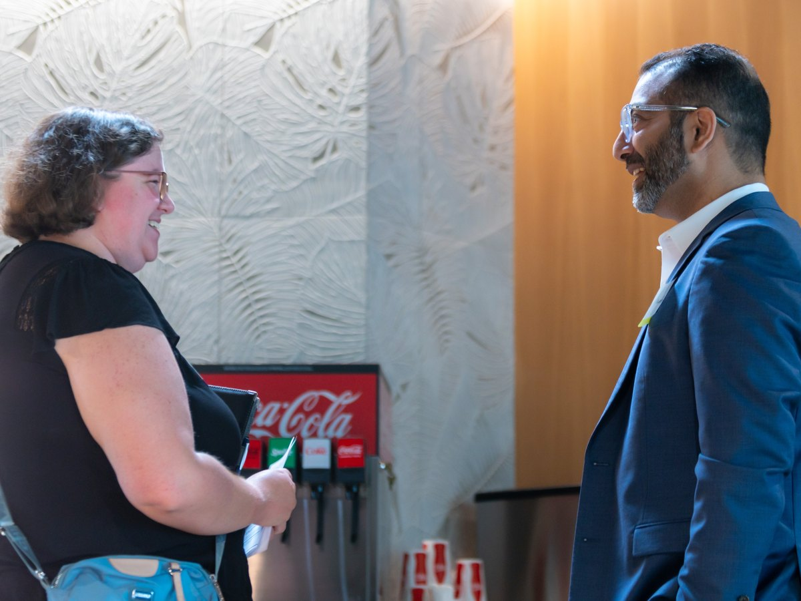

Bridging AI & machine learning, systems thinking, and human-centered design to build products that reduce complexity, surface next best actions, and make organizations faster and more human at the same time.
My career has one repeating pattern: walk into a fragmented environment (a legacy platform, an acquired system, a team built from nothing) and architect the way forward.
I do it through the intersection of human-centered design, AI & machine learning, and systems thinking. Not as buzzwords. As real tools that reduce cognitive load, surface next best actions, and build experiences that feel almost invisible in their ease.
Three intersecting capabilities that I bring to every leadership role.
Defining where AI genuinely belongs in your product, and what level your org is actually ready for, so next best actions and ML-powered recommendations help people decide faster instead of adding noise.
Seeing complexity clearly enough to simplify it. Designing mental models, information architectures, and platform structures that make even the most fragmented legacy systems feel cohesive and intuitive.
Building design functions from nothing, sized to where the company actually is, or inheriting broken ones and making them exceptional. Recruiting, mentoring, establishing career frameworks, and creating cultures where teams do their best work.
A few of the problems I walked into, and what came out the other side.
Built the design function and defined the AI experience strategy for a platform used by thousands of field-sales teams — next-best-actions, coaching nudges, and smart visit summaries that cut admin friction and return reps to selling.
Unified a fragmented, acquired fleet platform with ‘logic blocks,’ a modular design system, and an ML next-best-action layer that made dense operational data calm and legible.
Recruited into a university with no design function. Built the team, defined the role, established multi-layered Figma design systems, and launched a next-gen skill-based learning platform — end to end.
Navigated a pandemic-era demand surge while integrating an acquired platform and pivoting to user-centered design — driving extraordinary content-sales growth and expanding market reach.
I speak at conferences and events on AI in product design, design thinking, cognitive systems, and building design-led organizations. If your team or event could use a perspective that bridges AI, systems thinking, and human-centered design. Let's talk.
How AI surfaces in real products, and how design leaders should be shaping that conversation.
Why reducing friction is the highest-leverage design skill, and how to build it into your org.
How to build, grow, and sustain a high-performing design team from the ground up.
Contributing to the design community has been one of the most rewarding parts of this journey. I've actively engaged with organizations like the Dallas Society of Visual Communications and AIGA DFW, providing portfolio reviews, facilitating mentorship programs, and hosting the Behance Portfolio Review in DFW for three years.
Through these initiatives, I aim to uplift and inspire the next generation of designers, because great design culture compounds.

If you're building something complex and need a leader who can bridge AI, systems thinking, and design. Let's talk.